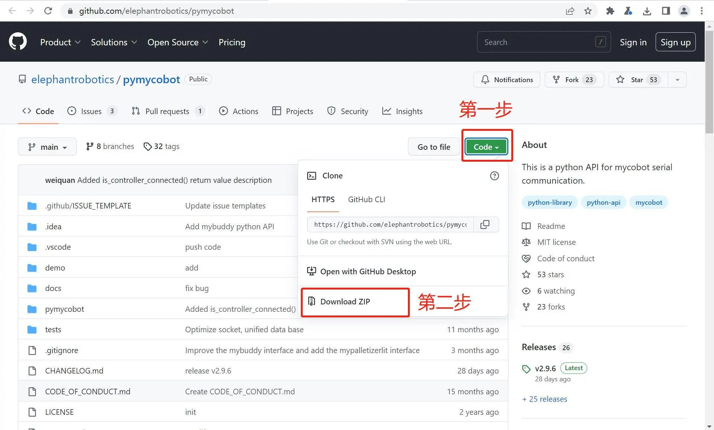

环境搭建
pymycobot 是一个和 myCobot 进行串口通讯的 Python 包，支持 Python2、Python3.5 及之后版本。
在使用 pymycobot控制机械臂之前需要搭建Python环境，下面就对Python的下载安装做出详细说明。
1 Python下载和安装
适用设备：
- myCobot 280：
- myCobot 280 M5
- myCobot 280 PI
- myCobot 280 Jetson Nano
- myCobot 280 for Arduino
myCobot 320：
- myCobot 320 M5
- myCobot 320 PI
myPalletizer 260：
- myPalletizer 260 M5
- myPalletizer 260 PI
mechArm-270：
- mechArm-270 M5
- mechArm-270 PI
目前，Python有两个版本，一个是2.x版，一个是3.x版，这两个版本是不兼容的。由于3.x版越来越普及，我们的教程将以最新的3.10.7版本为例进行说明。
1.1 安装Python
注意：安装之前，请先确认您的电脑是64位还是32位。右键点击
我的电脑，选择属性。如下图显示是64位的操作系统，所以选择64位的Python安装包。


Python官方下载地址： https://www.python.org/downloads/
点击
Downloads选项，开始下载Python，点击Add Python 3.10 to PATH,点击Install Now，开始安装Python


- 出现“Setup was successful”提示，说明安装完成

1.2 运行Python
安装成功后，打开命令提示符窗口（Win+R，输入cmd回车），敲入python后，会出现两种情况。
情况一：

出现图片中的提示表示Python安装成功。
出现提示符>>> 就表示我们已经在Python交互式环境中了，可以输入任何Python代码，回车后会立刻得到执行结果。
情况二：
假如输入错误（比如输入pythonn），则会出现错误提示：

注意：出现错误的信息一般都是没有配置环境变量导致的，可以参考1.3 配置环境变量修改环境变量。
1.3 配置环境变量
由于Windows会根据一个Path的环境变量设定的路径去查找python.exe，如果没找到，就会报错。因此，如果安装时漏掉了勾选Add Python 3.10 to PATH，则需要手动把python.exe所在的路径添加到Path中，或者重新安装一遍Python，记得勾选上Add Python 3.10 to PATH选项即可。
以下是手动添加python.exe所在的路径步骤。
- 右键我的电脑–>选择属性–>选择高级系统设置–>选择右下角的环境变量：

- 环境变量主要有包括用户变量和系统变量，需要设置的环境变量就在这两个变量中。如下图所示：

- 用户变量是将自己的下载的程序可以在cmd命令中使用。把程序的绝对路径写到用户变量中即可使用，如下图所示：

- 以上步骤完成后，打开命令提示符窗口（Win+R，再输入cmd，回车），敲入Python，出现下图中的提示表示成功：

2 PyCharm安装和使用
PyCharm是一款功能强大的Python编辑器，具有跨平台性。首先介绍PyCharm在Windows系统中的安装步骤。
下载地址： https://www.jetbrains.com/pycharm/download/#section=windows
2.1 下载安装
- 进入该网站后，我们会看到如下界面：

根据界面介绍下载文件，Professional表示专业版，Community是社区版，推荐安装社区版，因为是免费使用的。
- 下载好之后开始安装，点击
Next：

- 按照个人喜好选择相应选项，然后点击
Next：

- 出现下图界面继续点击
Next：

- 点击
Finish结束安装：

2.2 创建项目
PyCharm安装完成之后进入该软件，创建第一个程序。
- 单击桌面上的PyCharm图标，进入到PyCharm中，如下图所示，点击
New Project：

- 点击之后找到
Interpreter，开始对解释器进行设置，点击Add Interpreter：

- 点击
New，找到python.exe存储位置，勾选Inherit global site-package选项：

- 设置
Location。Location是存储PyCharm项目的地方，可根据需要自行选择。

- 新建PyCharm文件。右击箭头指向的文档图标，点击
New，点击Python File，新建成功。

- 命名Python File：

- 文件创建成功后便进入如下的界面，便可以编写自己的程序了

2.3 使用之前
- 固件烧录。固件是指设备内部保存的设备“驱动程序”。操作系统只有通过固件才能按照标准的设备驱动实现特定机器的运行动作。不同版本的机械臂需要烧录不同的固件（可以参考 MyStudio章节）。
- Pi \ jetsonnano版本末端Atom烧录最新版的 atomMain，出厂默认已烧录，无需自行烧录。
- pymycobot安装。打开一个控制台终端(快捷键Win+R,输入cmd进入终端)，输入以下命令：
pip install pymycobot --upgrade --user

- 源码安装。打开一个控制台终端(快捷键Win+R,输入cmd进入终端)，输入以下命令即可安装：
git clone https://github.com/elephantrobotics/pymycobot.git <your-path>
#其中<your-path>填写你的安装地址，不填默认在当前路径
cd <your-path>/pymycobot
#进入到下载包的pymycobot文件夹
#根据你的python版本运行下面其一命令
# Install
python2 setup.py install
# or
python3 setup.py install
3 Python简单使用
上述准备工作完成之后，开始通过Python代码实现对机械臂的操控。这里以myPalletizer 260 M5版本为例进行演示。
首先，打开您安装好的PyCharm，新建一个Python文件，输入以下代码，导入我们的库：
from pymycobot.mypalletizer import MyPalletizer
注意：
如果输入
from pymycobot.mypalletizer import MyPalletizer，字体下方没有出现红色波浪线证明已经安装成功可以使用了，如果出现红色波浪线可以参考如何安装API库 ，如何调用API库。如果不想通过上述命令安装API库，可以通过以下github下载项目到本地。
首先，进入项目地址：https://github.com/elephantrobotics/pymycobot。然后点击网页右边Code按钮，再点击Download ZIP下载到本地，将压缩包pymycobot文件项目中的 pymycobot文件夹放入你python依赖库目录中，就可以直接导入使用。

3.1 简单演示
在PyCharm中新建一个 Python 文件，输入以下代码可执行 LED 闪烁（myCobot 280-M5、myCobot 320-M5以及myPalletizer 260可参考以下代码）。
注意： 各款设备的对应的波特率不尽相同，使用时请查阅资料了解其波特率，串口编号可通过计算器设备管理器或串口助手进行查看。
以下是myCobot和myPalletizer相应的代码。
- myCobot
from pymycobot.mycobot import MyCobot
from pymycobot import PI_PORT, PI_BAUD # 当使用树莓派版本的mycobot时，可以引用这两个变量进行MyCobot初始化，如不是可不填该行代码
import time
#以上需写在代码开头，意为导入项目包
# MyCobot 类初始化需要两个参数：串口和波特率
# 第一个是串口字符串， 如：
# linux： "/dev/ttyUSB0"
# windows: "COM3"
# 第二个是波特率：
# M5版本为： 115200
# 以下为如:
# mycobot-M5:
# linux:
# mc = MyCobot("/dev/ttyUSB0", 115200)
# windows:
# mc = MyCobot("COM3", 115200)
# mycobot-raspi:
# mc = MyCobot(PI_PORT, PI_BAUD)
#
# 初始化一个MyCobot对象
# 下面为 windows版本创建对象代码
mc = MyCobot("COM3", 115200)
i = 7
#循环7次
while i > 0:
mc.set_color(0,0,255) #蓝灯亮
time.sleep(2) #等2秒
mc.set_color(255,0,0) #红灯亮
time.sleep(2) #等2秒
mc.set_color(0,255,0) #绿灯亮
time.sleep(2) #等2秒
i -= 1